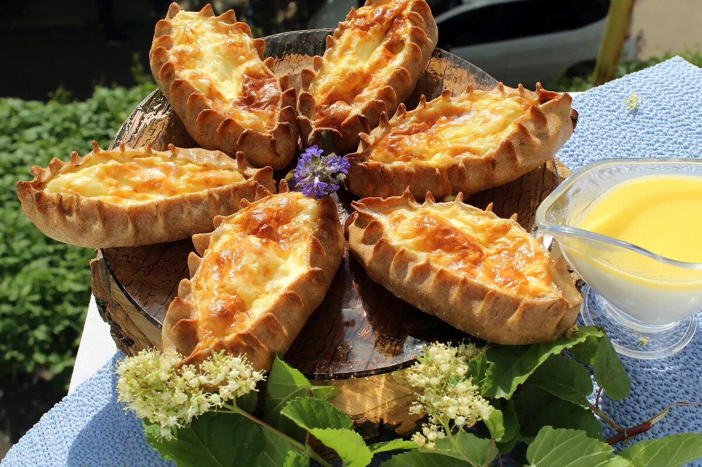
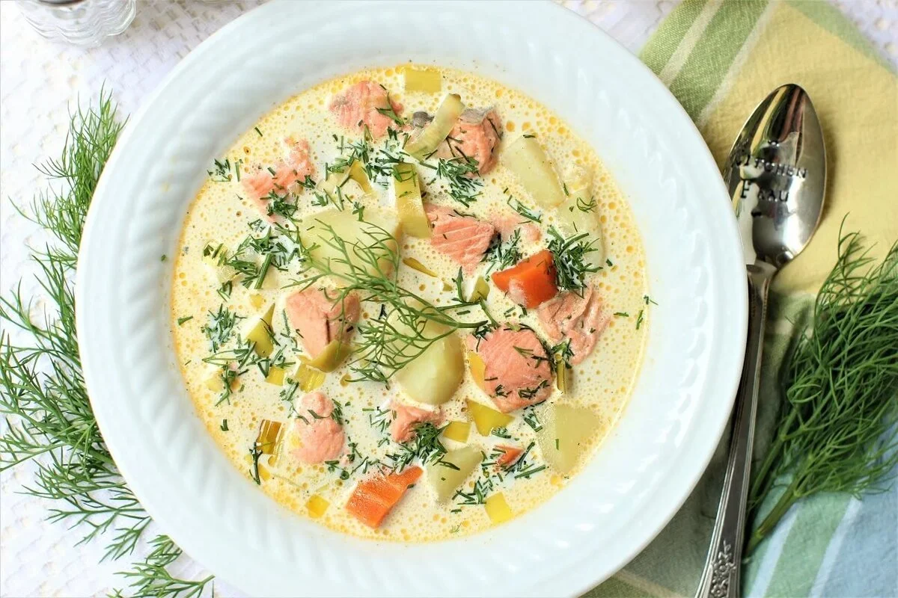
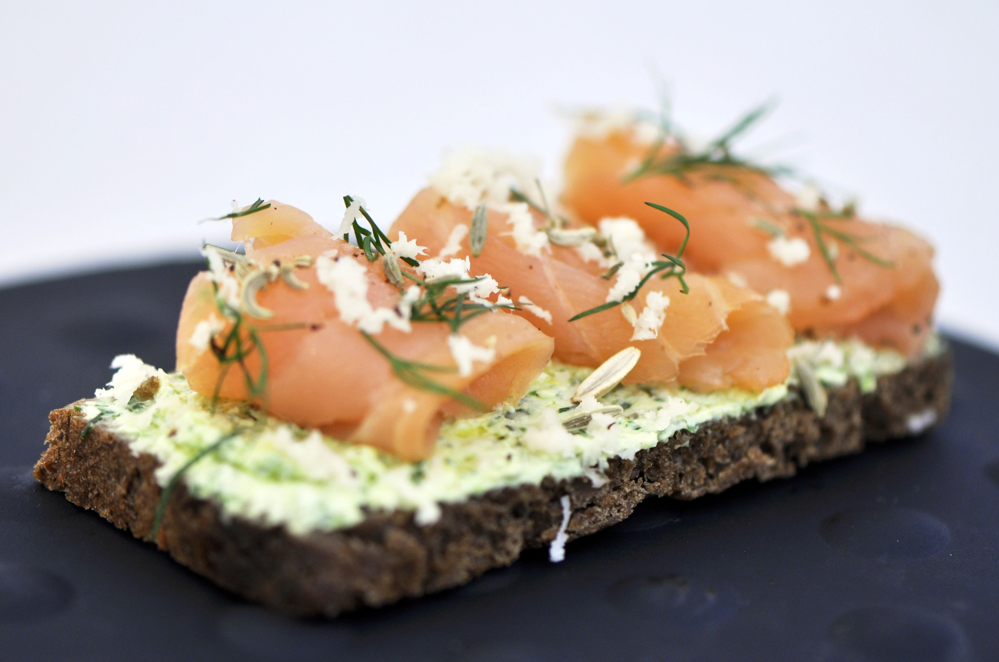

 Калитки (kalittoa) - небольшие открытые пирожки из ржаного пресного теста с различными начинками, наливками, намазками или припёками. Традиционное блюдо карельской кухни.
Карельские женщины говорили: «Калитка просит восьмёрки» (Kalittoa kyzyy kaheksoa) , то есть чтобы испечь калитки, нужно восемь компонентов: ржаная мука, вода, простокваша, соль, молоко, масло, сметана и начинка (ячневая или перловая крупа, картофель, рис, толокно).
Вологодские рогульки являются близкими родственницами карельских калиток. По сути, это ватрушки без дрожжей, края которых аккуратно защипывают. Отличие от калиток заключается лишь в методе защипки: у калиток краешек теста немного накрывает начинку, поэтому они выглядят более гладкими, без «рожек». Рогульки готовят с различными начинками: отваренной крупой, репой, картофельным пюре, добавляя по вкусовым предпочтениям укроп или жареный лук.
 Калакейтто (kalakeitto) — карельское и финское национальное блюдо, традиционный рыбный суп. Под названием «молочная уха» или «соловецкая уха» суп известен на севере России.
Суп является характерным примером довольно свойственно гофинно-уграм (особенно эстонцамифиннам) широкого применения молочных продуктов в виде компонента горячих блюд. Обычно калакейтто готовится из рыбы с белым, бескостным филе (камбала,сиг,треска). Праздничный вариант калакейтто — с лососем и сливками вместо молока — называется лохикейтто(lohikeitto).
Блюдо «Караси в сметане» является классическим рецептом русской кухни. Караси в сметане — это достаточно аппетитное блюдо, но многие его не любят из-за количества косточек. Караси – один из источников высококачественного белка. Если вы занимаетесь спортом и следите за мышечной массой.
 Граавилохи (graavilohi) - это сырая рыба высокого качества, приготовленная в пряном маринаде. Блюдо обычно подают с укропно-горчичным соусом, карельскими пирожками, на ржаном хлебе или с отварным картофелем. Основные ингредиенты включают рыбу лососёвых пород, соль, сахар и укроп.
Семга соленая - в России семга стала популярна относительно недавно, в основном благодаря доступности этой рыбы на рынке. Соленая семга часто используется в качестве ингредиента для различных блюд, таких как салаты, бутерброды, суши и другие.
| Карельская кухня | |||
|---|---|---|---|
| На 100 г. | Калитки | Калакейтто | Граавилохи |
| Калорийность | 199 ккал | 45 ккал | 151 ккал |
| Белки | 5 г. | 3 г. | 18 г. |
| Жиры | 9 г. | 4 г. | 6 г. |
| Углеводы | 26 г. | 2 г. | 6 г. |